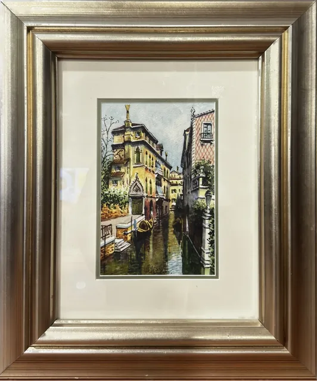
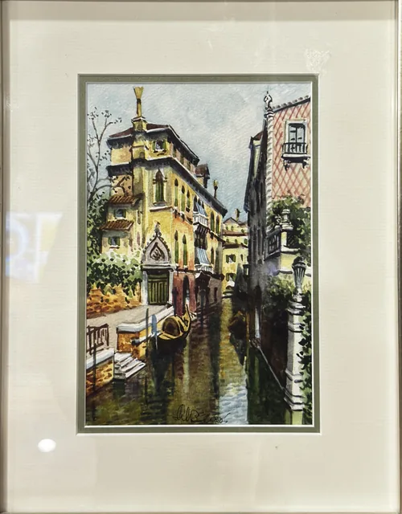
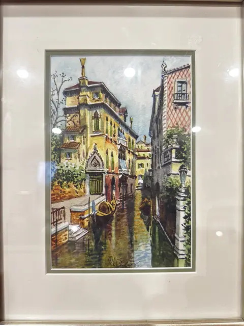
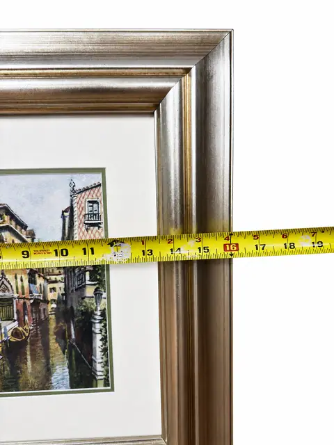
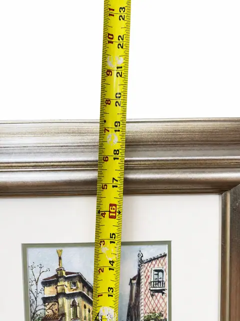
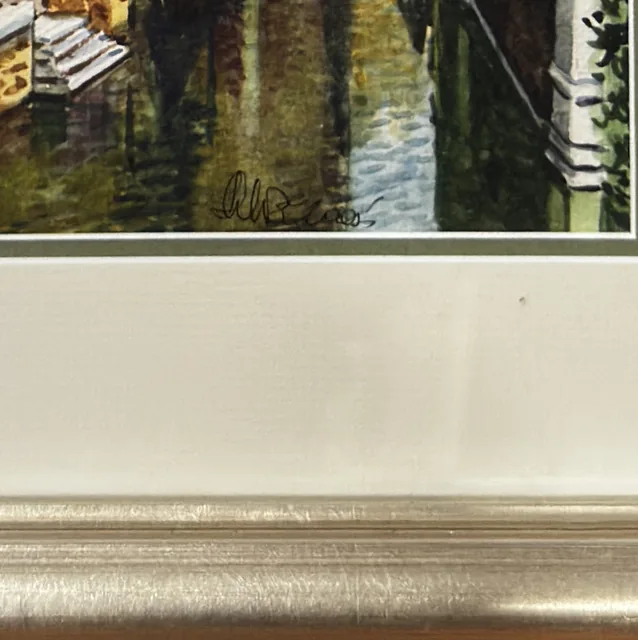
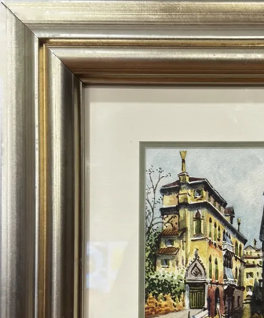

Paintings & Prints
Framed Watercolour of a Canal Street, Silvered Frame, Wide Mat
Price Upon Request









About the Item
Architectural view of a canal street with figures. Watercolour on paper, presented with a wide mat in a silvered moulded frame under glass.
Details
- Dimensions:
- Height: 19.25 in (48.9 cm)
Width: 16.0 in (40.64 cm)
outside of frame - Condition:
- Offered in the condition shown in the photographs.
- Reference Number:
- VO-12